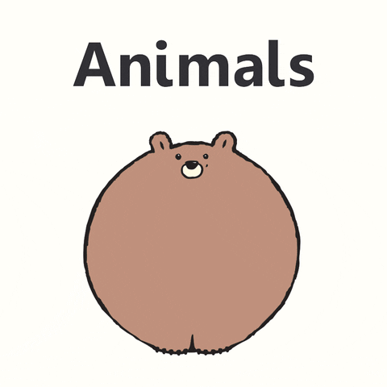

So you're getting better at coding? We've got some challenges for you.
So you're getting better at coding. Maybe you've earned some CoderDojo Stirling badges. Now try some of our challenges below!
Newest challenges:
Scratch: Make a Spring garden with bees and flowers
Scratch: Make a game where you whistle!
Twine Story: Write an interactive story called 'Lost Bone'
Websites: Make a webpage about your pet (real or made up)
Coding: Make a program that writes secret spy messages
Microbits: Turn your Microbit into a stopwatch
Scratch is a nice programming language for learning how to code. If you haven't used Scratch before, you can do our Scratch badges to get started. If you have used Scratch before, pick a challenge below and do it!
Make a theatre stage with a band on it: a drummer, a guitarist, a singer, and anyone else you want. When you click on a person (or their instrument), the instrument sound should play. So when you click on the drums, you hear drums!
Getting started:
More advanced: Try clicking your band members at the right time, so it sounds like a proper song!
Make a story about a bear searching for his dinner. The bear should move around, and tell the following joke to a frog:
Hints:
Create a maze game. If you collide with a wall, you get teleported to the start, and told “you clumsy oaf”!
Getting started:
Make a spring garden in Scratch, with moving parts and things to click on. Add flowers, bees, butterflies, the sun and clouds.
Some ideas:
Hints:
Make an animation of your name, so each letter does something cool like make a sound, or move around or change colour. I’m called GREG, so the G might spin around, the R might change from red to blue, and so on. The animation should start when the Green Flag is clicked.
Getting started:
More advanced: Make the animation cooler. You could make the background change, or make a bird fly around, or make the letters do things when you click on them.
Create a game where the player gets points when the cat catches a mouse, and loses points when the cat steps in a dog-poo.
Getting started:
More advanced: can you make this game two-player?
Build an aquarium with fish swimming around and plants at the bottom. The fish should turn round when they hit the aquarium edge.
Getting started:
More advanced: Add a shark into the aquarium that is controlled with the arrow keys. Make the fish run away when they bump into the shark.
Make a game about a space miner:
Getting started:
Make a Hide and Seek game with the Scratch Cat: the Cat will appear somewhere on the screen, then vanish after 2 seconds. 6 seconds later, the Cat will appear somewhere else on the screen, then vanish again after 2 seconds. It does this forever. The player gets one point when they click on the cat, and lose a point if they click on the background.
Getting started:
Make a game about escaping a graveyard. You start at one side of the graveyard, and have to escape through a gate on the other side. The graveyard has grave-stones in the ground, and ghosts that move around. If you collide with a grave-stone or a ghost, you get teleported to the start.
Getting started:
More advanced: Make the graveyard more spooky. What about making an invisible ghost appear when the player hits a gravestone? Maybe it says “boo!” (record the sound effect)
Make a game about someone doing a parachute jump, and having to dodge moving clouds. If they hit a cloud, they lose the game.
Getting started:
More advanced: make things harder, with more clouds moving randomly at different speeds. You could also keep score by counting how many clouds the parachutist dodged. Or make things look cooler by changing the background: what about thunder and lightning, or snow?
Make a quiz where the player has to multiply random numbers together. "What's 2 times 7?". "14". "Correct!".
Getting started:
More advanced: make the quiz ask 10 questions, and keep a score of correct answers. And do more fun stuff when the player gives a right answer (yay!) or wrong answer (boo!).
Make a scene with a windmill (or wind turbine) and a cloud. Make the windmill turn and the cloud move across the sky. Now here's the fun bit: make the windmill turn faster the louder you whistle (or yell) into your computer's microphone. The cloud should move faster too. The louder you whistle, the stronger the wind!
Getting started:
More advanced:
Make a game that measures your reaction time: how fast you can click when Scratch cat changes from his normal orange colour to blue. At the end of the game, show your reaction time (it will be in milliseconds, which is a second divided into 1000 parts). What's the fastest you can click?
Getting started:
More advanced:
Make a Scratch program that generates random insults :-) Scratch cat first asks for your name, then insults you. Here goes..
Getting started:
Write a game about flying to the moon. There should be three stages in your game: one set on Earth; one in space and one on the moon.
To start the rocket the player should press the space bar five times. Then the rocket should fly into the air. When the rocket reaches the top of the screen, the background should be changed to the next background (e.g. from Earth to space). Along with placing the rocket at the bottom of the screen again. The player should be able to move the rocket left and right using the arrow keys. There should be Aliens and other space-ships flying around. If the player touches one of these they lose the game. When the player reaches the last stage (the moon) a target should appear. The target should be placed at the top of the screen. If the player hits the target then they win the game.
If you manage to complete the above try and place the target at the bottom of the screen. Then have the rocket start at the top and move down the screen (towards the target).
Write a small game about popping balloons. In the game the balloons should float from the bottom to the top of the screen. When the player clicks on a balloon then it should disappear from the screen, and a popping sound should be played. Then one should be added to their score. There should be other items floating up the screen; if the player clicks on any of these they should lose a point.
So you're going back to school - you'll need to make sure you've got a pencil, notebook and calculator.
Fortunately, it's raining school supplies. Your sprite needs to walk back and forth across the screen catching pencils, notebooks and calculators in their backpack. Set up a timer so that players have one minute to collect as many as they can. Set up a counter to count how many items they catch.
Hints:
Make your own version of a classic 1980s game called "Frogger". Check out this video. The aim of the game is to guide a frog from the bottom of the screen to the top of the screen, whilst crossing lanes of a busy road. Each lane contains moving cars, buses, cyclists and other vehicles - don't let the frog get run over! The player moves the frog using the arrow keys (hopping forwards, back, left or right). The player wins by guiding the frog safely to the top of the screen.
Hints:
Create a Halloween scene: for example a spooky forest or a graveyard. When you click on anything in the scene, something scary should happen. A spider drops from this tree; an owl flies out of that one; a ghost pops out from behind a gravestone; a witch flies cackling across the moon. How many spooky surprises can you put in?
Hints:
Santa needs help dropping presents down chimneys. Make a game where Santa flies across the sky over some houses with chimneys. When the mouse is clicked, Santa drops a present which falls downwards. If the present hits a chimney, you score 1 point. If the present hits something else (like a roof), you score nothing. In either case, the present vanishes, and you get to try again. You win once you've scored 10 points.
Hints:
Scratch Cat has made a New Year Resolution not to eat cake. Write a game where Scratch Cat has to dodge cakes that fly round the screen. If Scratch Cat touches cake, he loses a life (and the cake vanishes - yum yum!). Scratch Cat has 9 lives. When he runs out of lives, the game finishes. The player should then be told how many seconds Scratch Cat survived.
Hints:
Make a scene of a robot disco! There are two robots dancing, waving their arms and their legs. There should be crazy electronic music playing, and some flashing lights. Make it a cool robot disco.
Hints:
Make an Easter egg hunt game - the player wins by finding 10 Easter eggs hidden behind trees, rocks and animals in a country scene. Eggs should appear in random locations for a few seconds then vanish again. If you click the egg then you gain a point.
Hints:
It rains a lot in April. Make a game where you dodge raindrops. Get hit by 3 raindrops, and the game finishes. The player should be told how many seconds they survived.
Hints:
There are some good video tutorials on YouTube that show you how to make cool things with Scratch. Follow along with this 10 minute video tutorial, where you learn how to make a zombie survival game: the player is attacked by zombies, and can run around and shoot the zombies.
Once you have your own zombie game working, then you can improve it how you want, or keep watching more video tutorials in the series. There are 9 more videos: part 2, part 3, part 4, part 5, part 6, part 7, part 8, part 9 and part 10.
There are plenty more video tutorials on YouTube about making games in scratch: try searching for "Make a scratch game". For example, here is a video playlist that shows how to make a 'cat chasing mouse' game, a 'whack a mole' game, and more.
Scratch Cat has gone on holiday to the beach. He will need regular food, drink and sunscreen to enjoy himself. If he doesn't get enough of each then he'll be hungry, thirsty and sunburnt. Scratch Cat will then come home from holiday early as he feels unwell. Sadness.
Make a "virtual pet" game where you keep Scratch Cat on his beach holiday for as long as possible. You will need to give him food, drink or sunscreen, depending on what he needs. The basic idea is that you have "variables" that show how Scratch Cat is feeling, like: "Hungry: 4". Scratch Cat gets hungrier over time, so the variable starts at zero and increases 2 points every 5 seconds. The player can reduce points by feeding Scratch Cat: they do this by clicking on some cat food. If the "Hungry" variable gets to 20 points, then Scratch Cat feels unwell and goes home early: the game finishes. You will need three different variables: "Hungry" (fixed by cat food), "Thirsty" (fixed by a water bowl), and "Sunburnt" (fixed by sunscreen).
To get started, let's deal with Scratch Cat being hungry:
Next steps:
Learn how to make an adventure/RPG (role-playing game) game by following along with this 10 minute video tutorial.
Once you have your own game working then you can improve it how you want, or keep watching more video tutorials in the series. There are 6 more videos: part 2, part 3, part 4, part 5, part 6 and part 7.
Make a Scratch program that generates random spy names :-) Scratch cat first asks for your name, then tells you your spy name. Here goes..
Getting started:
To finish things off, let's replace Scratch cat with M: head of the Secret Service in James Bond films. Make a new sprite for M: they should be dressed in normal clothes. Now add an extra "spy" costume for M: they should be dressed like a spy, with dark glasses, a fake moustache, and maybe all in black. When M asks your name, show them in their normal costume. But when M tells you your spy name, show them in their spy costume. Cooool.
Make a story about you going to school. There will be 3 screens (each using a different backdrop):
Learn how to make a shoot’em up game by following along with this 10 minute video tutorial. Your aeroplane is being attacked by a swarm of enemy planes!
Once you have your own game working then you can improve it how you want, or keep watching more video tutorials in the series. There are 12 more videos: part 2, part 3, part 4, part 5, part 6, part 7, part 8, part 9, part 10, part 11, part 12 and part 13.
Rudolf woke up on Christmas morning and couldn't find his red nose. Make a reindeer sprite either from a picture or by drawing in Scratch. Draw a complicated maze sprite and hide a sprite of Rudolf's nose somewhere in it. Make Rudolf move with keys on the keyboard. He should bounce off the walls of the maze. When he finds his nose, change sprite costumes so that his nose disappears from the maze and appears on Rudolf.
Getting started:
More advanced: Animate a celebration after Rudolf finds his nose with fireworks and dancing.
Make a "Flappy Parrot" game by following along with this tutorial. Like Flappy Bird, but with a parrot!
After that: the Flappy Bird tutorial comes from the Raspberry PI website, which has a bunch of other Scratch projects. Try them out.
Ron the snowman is struggling with the warm weather - he's in constant danger of melting. Can you keep him safe from Supermoon who wants to make the night as hot as your summer holidays.
Getting started:
You can find out more about the recent super moon here.
More advanced: Add a score to the game with some text beneath that says how melty Ron the snowman feels.
Draw patterns in Scratch to make beautiful art.
Getting started:
More advanced: change the circle block to draw a square instead.
Follow along with this tutorial, when you get to race a boat through a sea maze to a desert island. Don't crash the boat!
Learn how to make a racing game (try it out) by following along with this 20 minute tutorial. Then improve the game by watching more videos in the series: part 2, part 3, part 4, part 5, part 6, part 7, part 8 and part 9.
Learn how to make the classic game of "snake" by following along with this 12 minute tutorial.
There are some good video tutorials on YouTube that show you how to make cool things with Scratch. Follow along with this 12 minute video tutorial, where you learn how to make a scrolling platformer game, like Super Mario.
Once you have your player moving in the game, keep watching more video tutorials in the series to make the game better. There are 9 more videos: part 2, part 3, part 4, part 5, part 6, part 7, part 8, and part 10. Or here is the full series playlist.
You can use a Microbit to control things in Scratch. We're going to fly a bird using a Microbit. Tilt your Microbit to make your bird fly up and down, and use the A and B buttons to speed up or slow down.
Getting started:
Make a fun Christmas card with Scratch. You can put anything Christmas-ey on it: Christmas trees, santa, reindeer, the nativity, ... Can you make it fun? The card could play music in the background, or maybe when you clicked on something. And you could animate it, so a christmas present might unwrap itself when you clicked on it. And it could snow.
Scratch Cat has made a New Year’s resolution not to eat any more doughnuts. Make a game where Scratch Cat has to dodge flying doughnuts. If he hits a doughnut, he loses the game.
Getting started:
More advanced:
Pancakes are popular this time of year. They can be sweet or savoury but they all need flipping over! Make a game where you flip a pancake, and have to catch it in a frying pan.
Getting started:More advanced: Add a variable to keep score - gain a point if you catch a pancake, and lose a point if it hits the floor.
Make a fireworks display. Ideas:
Hints:
Learn how to make a brick breaker game (try it out) by following along with this 32 minute tutorial.
Then change the game to make it cooler: make the bricks different colours, change the background, add sounds, or whatever you want.
Make a story about going to the safari park. There should be a car which drives through an animal enclosure full of lions (or elephants, or whatever!). The car can stop, the animals can more around, and the car can move on.
Valentines Day was on 14th February. Make a Valentines card with Scratch: it could have hearts, or flowers, or Cupids on it - and say 'Happy Valentines Day' on it. Can you make it fun? The card could play music in the background, or maybe when you clicked on something. And you could animate it, so a heart might spin, or a flower change colour.
February has 29 days in a leap year, and 28 days otherwise. Make a leap year checker, where Scratch cat asks you for a year, and tells you if it's a leap year or not.
Getting started:
Examples:
For more advanced, whether a year is a leap year is more tricky than I said:
Write the story of the "Three Little Pigs" (4 minute video of it here).
You will need a wolf sprite, a pig sprite, and houses of straw, brick and stone (the stone house has a chimney). You can then move the wolf and pig sprites around to tell the story. You can use "broadcast" blocks in the "Events" section to send messages between sprites, so one sprite can say/do something after another sprite is done. You'll need 3 scenes, one for each house. Here's what happens in each scene:
House of straw:
Wolf: "Little pig, little pig let me in"
Pig: "Not by the hair of my chinny chin chin"
Wolf: "Then I'll huff and I'll puff and I'll blow your house in!"
Wolf: blows house down, pig runs away
House of sticks:
Wolf: "Little pig, little pig let me in"
Pig: "Not by the hair of my chinny chin chin"
Wolf: "Then I'll huff and I'll puff and I'll blow your house in!"
Wolf: blows house down, pig runs away
House of bricks:
Wolf: "Little pig, little pig let me in"
Pig: "Not by the hair of my chinny chin chin"
Wolf: blows house, nothing happens
Wolf: "I'll get those pigs. I'll climb down the chimney"
Wolf: goes down chimney, lands on fire
Wolf: "Ow, ow, ow - I've hurt my bum!"
Wolf: wolf runs away
Pig: victory dance
Learn how to make a "endless runner" type game, where a t-rex jumps over cactuses (try it out) by following along with this 17 minute tutorial. The starter project mentioned in the video is here. There is also a part 2 (23 minutes) to finish things off.
Learn how to make a platformer game, with multiple levels and collision detection (try it out) by following along with this 27 minute tutorial.
Make a beach scene with Scratch. You will need a beach and some sea. Place interesting things in the scene like a sand castle, some shells, and a boat.
More advanced: add some animation so things move around. Ideas:
There’s a picnic in your street - yum! Your sprite needs to walk back and forth across the screen catching cakes, sandwiches and drinks. Set up a timer so that players have one minute to collect as many as they can. Set up a counter to count how many they can catch.
Hints:
Make a (short!) theatre play in Scratch. We'll show you how to make "Macbeth" by William Shakespeare. This is what happens:
Some hints to make the play Macbeth:
Lines for the witches to say:
Make a picture of a wood - with trees, animals, a house, and a sky - then change it 4 times so it's winter, spring, summer and autumn.
Hints:
Advanced:
Make a zoo with various animals in it: an elephant, some monkeys, a tiger, and anything else you want. When you click on an animal, it should make a noise. So when you click on the tiger, it roars!
Getting started:
More advanced:
Make a game called "Beach Clean", where you clean all bottles from a beach by clicking on them. You win when no bottles are left. Make the simple game first (instructions below), and then the real game.
For the simple game, show a beach with one bottle at a random location. When you click the bottle, it vanishes, and a "finished" screen appears. Instructions:
Follow along with this YouTube tutorial, and make a game where Santa drops presents down chimneys for points!
Make a game that lets you mix and match body parts: make the strangest, funniest or coolest person by mixing different heads, body and legs.
To get started:
More challenging:
Animate the Coronation of Prince Charles, where he is crowned King Charles III. We'll do the short version:
Hints
Learn how to make an RPG (role-playing game) by following along with this 8 video playlist. Looks cool!
Learn how to make a Geometry Dash platformer game by following along with this 8 video playlist.
Have you played the memory game called 'Pairs'? You lay out a bunch of cards that are pairs (of animals, or shapes, or colours). The cards are all mixed up and put face down. Each player takes turns to flip over two cards: if they are a pair, you keep the cards. If not, you turn the cards face down again. When all the cards are taken, the player with most pairs wins. Make the game in Scratch. You can either make the whole game yourself, or follow along with this YouTube playlist.
Your garden has been invaded by moles. Make a game where the player clicks on moles that pop up randomly to earn points. Getting started:
More advanced:
If you’ve never built a website before, do our badge called Get your own website on the Internet. If you have built a website before, pick a challenge below and do it!
Create a website about the solar system. It will need a start page describing the solar system, and a page about every planet. You could even do pages about different space missions involving astronauts.
Hints:
Create a website about the place where you live. Let’s say you live in Stirling. Where is it? How old is it? What would you show someone who came to visit? What interesting things can you do there?
Getting started:
You will definitely will the lottery next week, so it's time to plan your ideal home. Make a website with a page for each room in your ideal home. A page should describe the room and what's in it - add pictures of things you'd like in it, or rooms in other houses that inspire you.
You could also draw a plan of the house, which shows all the rooms, and clicking on any room should take you to the correct page. Each room's page could also link to the other rooms next door.
Make a webpage about your pet (real or made up). Some ideas:
Make a website about countries of Europe. Have a webpage about each country with lots of facts and pictures about it: the capital city, flag, population size, languages spoken, famous people born there, and so on. Then link to the webpages of geographically adjacent countries. So France would link to Belgium, Luxembourg, Germany, Switzerland, Italy, Monaco, Spain, and Andorra.
What do you want for Christmas? Let Santa (and mum, dad, gran and anyone else) know with your own website.
Your website should have descriptions and pictures of the items you want and links to where they can be bought. You could prioritise the items with a star rating to say how much you want that item, or organise it by price so everyone can find the right gift for you!
More advanced: Add some Christmas style and Christmas tunes to get everyone in the present-buying mood!
Chemistry, computing, psychology, microbiology, astronomy…. how many types of science can you think of?
Make a guide to science: your website should have one page for each type of science. Explain what it is. Include pictures of famous scientists or discoveries, and links to other websites so that your readers can find out more.
Make a website game about a haunted house. Each webpage is a room in the house, and describes the spookiness happening in the room. The links on a room’s webpage take the player to other rooms nearby.
The player starts outside the haunted house (on the website’s main page). They then choose which links to follow to take them though the haunted house, and out the back door!
So you watched the Olympics? There were loads of cool sports: swimming, triathlon, fencing, …
Make a website about the Olympics. You can have pages about different sports and athletes. Maybe a page about Rio de Janeiro in Brazil. Include pictures and videos (try including a youtube video). Link to other websites where your readers can find out more.
Make a webpage with lots of animal pictures. When you click on a picture ("sheep"), an alert box should pop up with the animal noise ("baa").
This challenge involves adding some javascript to your webpage. You'll need to get two parts working (do some searching online!):
Make a website for Bob's Bakery.
"My name's Bob, and I run Bob's Bakery. We make lots of cakes and tasty things: chocolate cake, gingerbread men, jam doughnuts, ring doughnuts, strawberry tarts, and lots more. I'd like to start selling my cakes on the internet, so will need a website. I reckon it needs:
I bet you've got a few favourite films. So make a website about them! You will need:
Make a website for Bob the Builder.
"I'm Bob the Builder. I build houses: houses for people, dog-houses, dolls-houses, tree-houses.. If it's a house, I can build it. I want a website so people can find me on the Internet, see what I do, and contact me if they're interested. Hopefully I'll get some new customers! I reckon the website needs:
My favourite game. Write a small website about your favourite game(s). The website should contain:
Pick a browser game you like and write a new page for it with all the details specified above. Also try and place the game in the webpage, so it's playable. Hint: lookup what an iframe is.
Imagine you are selling your house - make a website to promote it. To get an idea of what you need to show, look at this real estate agent website, and click on one of the houses for sale.
If you don't want to make a website for your real house, then just make a house up. You could pretend you were selling Stirling Castle!
The website should contain:
Write a website about the teachers in your school. Each teacher should have their own page, describing what they teach, how much homework they give, how strict they are, what their classroom is like, etc. You could add a drawing of each teacher to help new pupils identify them. Don't forget the Head Teacher! You could arrange the front page so that the teachers are organised by subject.
Make a website with the best memes ever. It should be possible to view memes by animal type, subject and year, so you'll need different web pages for this.
How text appears on a webpage depends on which font is used. For example, we could use the Courier font, or Verdana font. Write a webpage that shows the same piece of text with different fonts: use the sentence "the quick brown fox jumped over the lazy dog". The text will feel different, depending on the font used. Try finding fonts that look official, funny, old or futuristic. What's your favourite?
Getting started:
Complete the CSS Selector Game, to learn about CSS selectors. It's got 32 levels, so should take some time!
If you're not clear on what a CSS selector is, you might want to do one of these courses first:
Make a website about different Easter traditions around the world - a page for each one. For example, eggs are rolled down hills in the United Kingdom, whilst Spain holds processions to celebrate Semana Santa (Holy Week). Use pins on Google Maps to show where each tradition happens.
CSS lets you write text and backgrounds in different colours. Write a webpage that shows the same piece of text with different background and text colours: use the sentence "the quick brown fox jumped over the lazy dog". Use a large font size so you can get a good look at the colours. Choose colour combinations that are readable. Which combinations don't work together, and why? What's your favourite?
It's the summer holidays. Are you going somewhere nice? Paris? Ooh la la!
Imagine you're the Paris Tourist Board (or any other holiday destination). Make a website for tourists visiting Paris. You will need:
Love it or hate it, your school sports day is just around the corner. Create a webpage guide to the day.
Make it serious, with a page to explain each competition and notes about how the long jump, hurdles and shot-putt are scored.
Or make it silly, with top tips for winning the egg-and-spoon race, pictures of three-legged disasters, and tales of how your little brother crashed out of the sack race last year.
You’ll need a page for each competition.
Make a website telling people about Scratch: what it is, and what you can do with it.
You can link to Scratch games and stories you like. If you've made some Scratch games and stories yourself, then link to them as well, and write down what was interesting or challenging about making them.
Show off your Scratch knowledge!
Javascript is the coding language used to make websites interactive and whizzy. Take a look at the free Codecademy "Introduction to Javascript" course.
Create a website for your Christmas present wish list. Lay all the details out neatly in a table. You could have a column for the presents, another column for where to buy them from and another for options like colour . Give your website a nice big title. Add a bit of sparkle with an animated background made from images you find about Christmas.
Make a Cat Meme Generator by following along with this tutorial.
After that: the Cat Meme Generator tutorial comes from the Raspberry PI website, which has a bunch of other html+css projects. Try them out.
Create a website about the warm weather we are having. Why is the weather so warm when we had deep snow in February last year? Is it global warming or is it just chance.
Add a bright title.
Search the internet for information about weather variation to include on your website. Add some pictures of February weather in Scotland
Add some visual effects to enhance the weather theme.
Animated GIFs are fun small videos designed for the internet, like this one
You need a few pictures to join together to form the video.
You can make pictures using Scratch:
You can then combine your pictures into an animated gif using giphy.
Boxes, borders, position and padding: these are all parts of CSS which are used to layout parts of a webpage. Follow along with this tutorial to explore how layout works and how webpage elements are controlled with CSS. Have a play with the examples.
Take a look at the free "Introduction to HTML" course at Codecademy.
You've just had seven weeks holiday... did you get bored at all?
Make a website about all the great stuff you did, to keep others from getting bored next summer. You could include pages about:
Links on webpages are usually blue and underlined, and change to purple once clicked. CSS styles let us change this - we can choose how links are displayed. Let's play around this:
<style>
a:link {
color: green;
background-color: transparent;
text-decoration: none;
}
a:visited {
color: pink;
background-color: transparent;
text-decoration: none;
}
a:hover {
color: red;
background-color: transparent;
text-decoration: underline;
}
a:active {
color: yellow;
background-color: transparent;
text-decoration: underline;
}
</style>
Web forms allow someone visiting your website to type in some information. Clever websites can do exciting things with this information like calculating how many Dollars you can get in exchange for a Pound.
Follow this tutorial to see how web forms work.
Create your own web form for users to enter information about their holiday. You could use text fields so users could say where they went and for how long. Use selection buttons so users can say whether they traveled by train, car or aeroplane. You could use a drop down list so users can rate their holiday out of 5 (a different entry for 1 star, 2 stars, etc).
More advanced: Style your form to make the form elements look more attractive.
Food. Lots of it. That's what Christmas is all about, right?
Make a website to showcase all the scrummy food you look forward to at this time of year. Create a page for each dish, and link them together. You'll need pictures, recipes for how to make it, and a bit of a story about why you love it or when you have it. Make sure you use plenty of Christmassy styling on the pages too.
Make a website about a street in your town with lots of shops and cafes. For each shop/cafe, add a description, a photo (if you have one), and links to their website, facebook page, etc. To make it interesting, you could lay the webpage out like a map of the street, and lay the shops' details out on the map.
Make a website about the months of the year. Have a main page, with links off to other pages: one for each month of the year. On a month page - like "January" - explain where the month name comes from, important events that happen in that month, pictures of scenes from that month, and anything else you think is interesting.
Make a "did you know" website about Santa and his reindeer. Have a main page about Santa and his sleigh, delivering presents on Christmas Eve. How many presents do they deliver? Who do they deliver them to? How fast does the sleigh go? Then link to different sub-pages about just Santa, and each of his reindeer (Rudolph, etc). You can add silly biographies about each of the reindeer, and pictures, and anything else you want! Can you embed a YouTube video with the 'Rudolph the Red Noise' reindeer song?
Make a website about learning to code - you could base it on what you've learnt so far. Have pages about different areas like Scratch, HTML and CSS, real coding languages like Python and Javascript, and hardware like Microbits and Raspberry Pi. Each page could explain what each area is, and the important ideas. It could also link to other pages on the internet that are useful. So the Scratch page could have links to Youtube tutorials, or to Scratch games that you like.
Make a website about the Coronation of King Charles III. You'll need a 'welcome' start page, with links off to different topics. Some topic ideas, each on a different webpage:
Make a website about your favorite animals! Each animal gets its own page with pictures, facts, and fun details such as:
You will be writing interactive stories (with different paths and endings) using a tool called Twine.
If you’ve never used Twine before, do our badge called Write Your First Twine Story. If you have written a story with Twine before, pick a challenge below and do it!
Make a "Choose Your Own Adventure" story with Twine called "A Day in the Life of Timmy the Dog".
To start you off, your first page might look like:
Timmy the Dog is sniffing the rubbish bin outside his house. Suddenly he hears a rustle behind him, and
sees Sooty the Cat staring. Timmy:
* Walks up to Sooty, and tries to make friends.
* Bounces up to Sooty, and starts a fight. That cat needs a lesson.
* Runs awwaaaaay! Sooty is scary.
Each choice is a link to another page, where the story continues. So what happens when Timmy runs away,
or starts a fight?
Make a "Choose Your Own Adventure" story with Twine that's the classic story "The Three Little Pigs". (4 minute video of it here). You are the Wolf.
To start you off, your first page might look like:
Dave the Wolf is hungry. He's learnt that 3 little pigs have moved into the area, and have built themselves
houses. Dave likes eating pigs. He heads for the first house, which strangely is made out of straw. Dave:
* Walks up to the door and knocks on it. Maybe the pig inside will answer.
* Finds a goat in the field next door, and leads it over to the straw house. Hopefully the goat
can eat through the wall.
* Climbs onto the roof, so he can climb down the chimney and surprise the pig.
Each choice is a link to another page, where the story continues. So what happens when Dave knocks on the
door, or climbs up on the roof?
Make a "Choose Your Own Adventure" story with Twine called "The Magical Wardrobe".
To start you off, your first page might look like:
You and your Mum and Dad moved into the new house this morning. It's nice. Your first night in your new bedroom. You wake at 3am to a strange noise: a ringing coming from the attic. You quietly creep up into the attic, and find the ringing is coming from a big old wardrobe in the corner. You: * Panic, run down to your bedroom and hide under the covers. * Open the wardrobe. Let's get this adventure started. * Go wake up your Mum and Dad. They need to know.
Each choice is a link to another page, where the story continues. So what happens when you open the wardrobe?
Make a "Choose Your Own Adventure" story with Twine called "Voice from the Postbox".
To start you off, your first page might look like:
You're waiting for your Mum outside the Post Office - she's gone in to post a parcel. You lean against a big old red postbox. Suddenly you hear a voice. "Help!" it says. It's coming from inside the postbox. What's going on? You decide to:
* Peer inside the postbox slot. Maybe there's someone stuck in there
* Ignore the voice. You're imagining things. No-one could be inside a postbox!
* Run inside the Post Office to see your Mum. She'll know what to do.
Each choice is a link to another page, where the story continues. So what happens when you peer inside the postbox?
Make a "Choose Your Own Adventure" story with Twine called "The Vault Robbery".
To start you off, your first page might look like:
You are a master jewel thief. You have tunnelled into a vault full of gold and diamonds underneath a famous jewellery shop in London. It is Saturday night, midnight, all quiet. Time to rob the vault. You step into the vault for the first time, and see piles of gold bars ahead of you. Suddenly an alarm on the ceiling above starts ringing. You: * Run away! You must have been discovered. * Ignore the alarm. You have a plan, and should stick to it. Maybe it's just a smoke alarm. * Try cutting the wires running to the alarm. Maybe that will stop it.
Each choice is a link to another page, where the story continues. So what happens when you ignore the alarm?
Make a "Choose Your Own Adventure" story with Twine called "The Power Went Out".
To start you off, your first page might look like:
You are home alone, watching TV. Suddenly you hear a loud bang in the distance, and the power goes
out. The TV goes black, and the streetlights switch off outside. You:
* Stay on the sofa eating crisps. Hopefully the power will come back on soon.
* Get your shoes on and head for the door. That loud bang needs investigating.
* Go find candles and matches in the kitchen drawer. The power might be off for a while.
Each choice is a link to another page, where the story continues. So what happens when you go outside?
Or if you stayed on the sofa, did the power come back on?
Make a "Choose Your Own Adventure" story with Twine called "No Door Key".
To start you off, your first page might look like:
You're having a bad day. You live on a farm miles from the nearest village. It's January, and it
snowed deep this morning. Coming home from school, the school bus struggles through and drops you
off on the main road. You walk the half-mile to the house. Turns out Mum and Dad have left to handle
an emergency with Gran. Mum says they'll be back tomorrow, so you should let yourself in and make
dinner. Except you forgot the house door key, and it's getting cold and dark. You:
* Take a look in the greenhouse. There might be a spare key hidden there.
* Give the back door a kick. Desperate times mean desparate measures. Maybe you can kick the door open
* Walk back to the main road. Maybe you can get some help
Each choice is a link to another page, where the story continues. So what happens when you look in the
greenhouse? Or when you walk back the the road in the the cold and dark?
Make a "Choose Your Own Adventure" story with Twine called "Christmas Day".
To start you off, your first page might look like:
You wake up cozy, under the covers in bed. There's a filled stocking at the end of your bed - Santa's
been! You also hear Mum downstairs, making a cup of tea. You:
* Grab the stocking and talk a look. What did Santa bring?
* Put your slippers on and head downstairs to say "Merry Christmas" to Mum.
* Go back to sleep. Sleeping is nice.
Each choice is a link to another page, where the story continues. So what happens when you go downstairs?
Or if you grabbed the stocking, what's in it?
Make a "Choose Your Own Adventure" story with Twine called "Stealing the Crown Back".
To start you off, this is the first page:
The King is angry. Darksmoke the Dragon has stolen the King's crown. You have tracked Darksmoke back to
his lair in a dark cave under the mountains. You hide behind a boulder, watching Darksmoke sleep on a
pile of treasure. The King's crown is next to the dragon's tail. You sneak forward, ready to take back
the crown. Darksmoke sneezes in his sleep and moves his tail. You:
* Freeze. Maybe Darksmoke will settle down again and you can move forward
* Speed up. Let's get that crown back before Darksmoke wakes up.
* Panic and run back to the boulder. You must have woken Darksmoke up!
Each choice is a link to another page, where the story continues. So what happens if you panic?
Or if you speed up and grab the crown?
Make a "Choose Your Own Adventure" story with Twine called "Lost Bone".
To start you off, your first page might look like:
You're Patch, the smartest dog on the street. But today, disaster has struck - your favourite bone is missing! Where will you search first?
* Check the garden
* Sniff under the sofa
* Ask the cat
Each choice is a link to another page, where the story continues. So what happens when Patch checks the garden,
or asks the cat?
Make a "Choose Your Own Adventure" story with Twine called "Broken Ankle".
To start you off, this is the first page:
You are walking home from school through the wood. The path is slippy with mud. Suddenly you slip and
fall over down a slope off the path. You try to stand up but can't. Your ankle is really sore, and it's
at a funny angle. Maybe it's broken. What do you do?
* Get on your knees and crawl up to the path, gritting your teeth through the pain
* Stay where you are - if you move, you might hurt your ankle more
* Search through your school bag. Did you remember your phone today?
Each choice is a link to another page, where the story continues. So what happens if you stay where you are?
Or did you remember your phone?
Make a "Choose Your Own Adventure" story with Twine called "Hot Sticky Tar".
To start you off, this is the first page:
You are walking home from gran's house. You're running late for dinner so check your phone - and suddenly you
can't move! You just walked straight past a roadworks sign, and into some hot sticky tar! Looks like the
pavement was being fixed today.
You try moving your feet, but you're stuck up to your ankles. What do you do?
* Look in your school bag. Maybe there's something you can use to help get you free.
* Stay where you are. Maybe someone will come along and help.
* Yell for help. Surely someone will hear you.
Each choice is a link to another page, where the story continues. So what happens if you stay where you are?
Or can you dig out your feet?
Make a "Choose Your Own Adventure" story with Twine called "An Open Door".
To start you off, this is the first page:
Anya slammed the door behind her and ran across the field behind her aunt’s house. She could hear Aunt
Molly’s voice yelling after her as she ran, and tears were streaming down her face. When she reached the
woods on the far side of the field, Anya stopped and looked around. Among the trees, there was a tiny,
half-ruined house. But the door was standing open, and from inside there wafted a strange and delicious
smell.
What will Anya do?
* Go to the door and step inside.
* Call out, “Hello?” and wait to see who answers.
* Catch her breath, and trudge back across the field to the house.
Each choice is a link to another page, where the story continues. So what happens if Anya goes in? Or
if she goes back and faces her angry Aunt Molly?
Make a "Choose Your Own Adventure" story with Twine called "Halloween Flat Tyre".
To start you off, this is the first page:
Brad and Janet are driving in their car to see their old school teacher Mr Scott on Halloween.
It's night time and raining hard. Suddenly the car feels bumpy and there's a funny noise.
It's a flat tyre. Brad stops the car on the side of a country road. There is a spooky looking
castle in the distance.
What will Brad and Janet do?
* Get out and run to the castle. Maybe they can get help there.
* Stay in the car and get some sleep. They can get help in the morning.
* Get out of the car and wait under a tree. Maybe a car will come along that can help.
Each choice is a link to another page, where the story continues. So what happens if Brad and Janet go to the castle? Or do they stay in the car and wait until morning?
Make a "Choose Your Own Adventure" story with Twine called "Spanish Singer".
To start you off, your first page might look like:
It's too hot to sleep. Your little sister seems to have dozed off at last but even with the doors
wide open to the balcony of your hotel, there is no breeze. The sound of strange insects buzzes and
hums in the Spanish night air. As you toss and turn, you become aware of a voice right outside,
singing a sad song in the darkness. You are alarmed, but curious: there shouldn't be anyone outside
your room. Do you:
* Switch the light on, waking your sister, and yell at the singer?
* Sneak over to the door and watch, to find out who it is and what they are doing here?
* Put on your shoes and slip quietly out onto the balcony?
Each choice is a link to another page, where the story continues. So what happens if you at the singer?
Or do sneak out and find out more?
Make a "Choose Your Own Adventure" story with Twine called "Cat Tree Rescue".
To start you off, your first page might look like:
You are walking home from the shops. It's getting dark. Suddenly you hear a panicked "miaow miaow" from
above. There is a young cat struggling to keep its balance high up in a tree. You:
* Keep walking. You want your dinner and the cat will surely be fine
* You start climbing the tree. Maybe you can put the cat in your backpack to get it down the tree
* You look around for something long to point up the tree. Maybe the cat can grab on and slide down to the ground
Each choice is a link to another page, where the story continues. So what happens the cat? Does it get
down the tree in one piece?
Make a "Choose Your Own Adventure" story with Twine called "The Coronation Crown Heist".
To start you off, this is the first page:
You are Police Inspector Smith of Scotland Yard, in London. You have
learned that a gang of thieves are going to steal the Royal Crown from
Westminster Cathedral, ahead of the Coronation of King Charles III.
You must stop them.
At 7am you climb onto a roof opposite Westminster Cathedral, and use
binoculars to watch the crowds below as people start to gather. At 7:20am,
you see a familiar face in the crowd: one of the thieves. You:
* Run down the stairs and chase after the thief. Only you can stop him.
* Stay on the roof and keep watching the crowd. That thief was likely a decoy.
* Radio to a police officer at the Cathedral entrance to watch out for the thief.
Each choice is a link to another page, where the story continues. So what happens if you chase the thief?
Or if you stay on the roof and look for other suspicious characters?
Make a "Choose Your Own Adventure" story with Twine called "Santa Rescue".
To start you off, this is the first page:
You go to sleep all excited on Christmas Eve - what presents will Santa bring? At 3am you wake up needing a pee. You
head to the bathroom, but hear some noises from downstairs. You tiptoe down to the living room, and peer in. There's a
pair of red-trousered legs dangling out of the chimney! With black boots on! It must be Santa. He's stuck up the chimney.
"Help!" says a muffled voice.
What do you do?
* Grab the legs and pull down. Maybe you can pull Santa out.
* Run away and hide under the covers. Rescuing Santa is too much responsibility. Plus he's magic. He can sort himself out.
* Wake up your parents. They will know what to do.
Each choice is a link to another page, where the story continues. So what happens when you pull on Santa's legs?
Or if you wake up your parents?
Make a "Choose Your Own Adventure" story with Twine called "Alien Encounter".
To start you off, this is the first page:
It’s a warm summer night, and you’re camping in your garden, staring up at the stars. Suddenly, a bright light flashes,
and a UFO lands in your neighbor's garden. A ramp lowers, and a small, glowing alien waddles out, holding what looks like
a shiny cube. It notices you and waves.
What do you do?
* Wave back and approach the alien. Maybe it’s friendly.
* Run inside and grab your phone to record this for the internet.
* Hide behind the tree. You don’t want to risk getting abducted!
* Wake up your parents. They will know what to do.
Each choice is a link to another page, where the story continues. So what happens when you meet the
alien? Or if you wake up your parents?
If you’ve never coded in Javascript or Python before, do our coding badges to get started.
If you have coded in Javascript or Python before, pick a challenge below and do it!
Here are two online environments where you can start coding immediately (or use whatever setup you want):
Write a program that asks someone their name, then outputs it in reverse. So “GREG” becomes “GERG”.
Write a program that asks for a country name, then outputs the capital city. So “France” returns “Paris”.
Getting started:
More advanced:
Write a program that plays ‘rock paper scissors’:
More advanced:
Write a program that plays ‘hangman’. The player guesses letters to complete a secret word. You decide how many turns they get. On each turn:
Turtle is a well known graphics library for drawing in Python: you "drive" an imaginary turtle around to draw 2d shapes programmatically.
Give Turtle a try and draw something:
Write a program that counts the number of words in a sentence. For example, for “i am an example sentence”, the program would print 5 (words).
Then improve your sentence analyser:
Write a calculator that can add, subtract, multiply or divide two numbers. Make the calculator accept the two numbers and command one line at a time. Like:
More advanced: make the calculator accept everything on one line, like: 2 + 3.
Write a program that prints the numbers from 1 to 100. But for multiples of three print "Fizz" instead of the number and for the multiples of five print "Buzz". For numbers which are multiples of both three and five print “FizzBuzz".
Write a program that prints out the first 100 numbers in the Fibonacci sequence. In the Fibonacci sequence the first two numbers are zero and one. Every number after that is the sum of the previous 2 numbers. So the first seven numbers are: 0 1 1 2 3 5 8.
Write a program that turns a sentence into a secret message by replacing each letter with the next letter. So the letter ‘a’ is replaced by ‘b’, and ‘f’ by ‘g’, etc. Here’s an example:
Hint: letters are represented inside a computer as numbers. This is called ASCII: so an ‘a’ in ASCII is 97. You’ll need to convert the sentence letters into ASCII, do some addition, then convert them back again. Google to learn about ASCII, and how you convert letters to ASCII (and back again) in your particular programming language.
More advanced: so you’ve written a program that ‘encrypts’ a sentence into a secret message. Write a ‘decrypt’ program that turns a secret message back into the original sentence.
Write a program that outputs whether two phrases are anagrams of one another. For example:
Getting started:
Write a program that outputs whether a given number is a factorial (or not).
A factorial of a particular number is that number multiplied by all numbers below it. So 5! (meaning 5 factorial) = 5 * 4 * 3 * 2 * 1 = 120.
Calculating 5! is easy. But we want to reverse this. Write a program that tells us that "120" is "5!". The program should work for any number, either reporting that that the number is a factorial, or "NONE" if it isn't. For example:
Getting started:
Write a program that lets you create and manage a 'to-do list'. You should be able to: add an item, delete an item, and view the whole list (of items). Here's my example to-do list:
Getting started:
Write a game that measures your reaction time: how fast you hit the space-bar when told 'hit it!'. At the end of the game, show your reaction time in milliseconds (a second divided into 1000 parts). What's your fastest reaction time?
Getting started:
More advanced:
Make a program that generates random insults :-) The program first asks for your name, then insults you. Here goes..
Getting started:
More advanced:
Write a small program that takes in a number and then prints off a triangle of that height. Here is an example:
Please enter the height of the triangle:
5
Output:
#
##
###
####
#####
The program should only accept whole numbers between 3 and 10.
Once you've finished the basic version, try and produce the following output:
Please enter the height of the triangle:
5
Output:
##
####
######
########
##########
Write a small program that takes an amount of change, and then works out the minimal coins required to make it. You may only use the: 50, 20, 10, 5, 2, and 1 pence coins.
Input:
0.73
Output:
1 x 50
1 x 20
1 x 2
1 x 1
The program should only accept positive numbers and the input must never be bigger or equal to one.
So you're going back to school. Write a program that manages your school timetable. It should record which subjects you take during your school day. E.g.:
Input:
MON-PERIOD2
Output:
ENGLISH
Getting your driving licence requires you to pass a "theory test". Write a program that lets you practice the theory test: the program asks you a set of multiple-choice questions, tells you whether you correctly answered each question, and tells you your final score at the end. Here's an example question:
You will find that driving smoothly can:
Write a program that takes a time in 24 hour numeric form, and outputs it as words.
Challenge input:
Can you make the computer actually speak the time as words, so you have a real speaking clock?
Thanks to Reddit dailyprogrammer
Write the smallest possible program to print all the lyrics to the "Twelve Days of Christmas":
On the first day of Christmas my true love sent to me:
a Partridge in a Pear Tree
On the second day of Christmas my true love sent to me:
two Turtle Doves
and a Partridge in a Pear Tree
On the third day of Christmas my true love sent to me:
three French Hens
...
To start with, get things working by using numbers (rather than words) for the gift counts:
On the second day of Christmas my true love sent to me:
2 Turtle Doves
and 1 Partridge in a Pear Tree
There is a light that switches on when someone enters the room, and switches off when they leave. If multiple people are in the room, the light stays on until the last person leaves. Write a program that outputs how long the light stays on, given a list of when people entered and left the room.
Challenge input:
More input and output:
Input:
2 4
3 6
1 3
6 8
Output: 7
Input:
6 8
5 8
8 9
5 7
4 7
Output: 5
Can you change the program to work with more precise times? E.g 09:00 09:25.
Thanks to Reddit dailyprogrammer
Write a program that translates English into Leet Speak (or vice versa). Examples:
A -> 4
B -> 6
E -> 3
I -> 1
L -> 1
M -> (V)
N -> (\)
O -> 0
S -> 5
T -> 7
V -> \/
W -> `//
The program takes in one word or phrase per line, and converts it to (or from) l33t:
Challenge input:
I am elite.
Da pain!
Eye need help!
3Y3 (\)33d j00 t0 g37 d4 d0c70r.
1 n33d m4 p1llz!
Challenge output:
I am elite. -> 1 4m 37173
Da pain! -> D4 P41(\)!
Eye need help! -> 3Y3 (\)33D H31P!
3Y3 (\)33d j00 t0 g37 d4 d0c70r. -> Eye need j00 to get da doctor.
1 n33d m4 p1llz! -> I need ma pillz!
Thanks to Reddit dailyprogrammer
Code the game of 'Noughts and Crosses':
a b c
|---|---|---|
1 | | | |
|---|---|---|
2 | | | |
|---|---|---|
3 | | X | |
|---|---|---|
Player one, you are noughts. Enter your move: b2
a b c
|---|---|---|
1 | | | |
|---|---|---|
2 | | O | |
|---|---|---|
3 | | X | |
|---|---|---|
Player two, you are crosses. Enter your move:
Write a program that converts a number of seconds into
years/months/weeks/days/hours/minutes/seconds. Assume that
there are 365 days in a year, and 28 days in month.
Examples:
Write a 1-player version of the game 'Battleship'. Start with the simple version:
a b c d e f g h i j
|---|---|---|---|---|---|---|---|---|---|
1 | | | | | | | | | | |
|---|---|---|---|---|---|---|---|---|---|
2 | | | | | | | | | | |
|---|---|---|---|---|---|---|---|---|---|
3 | | | | | | | | | | |
|---|---|---|---|---|---|---|---|---|---|
4 | | | | | | | | | | |
|---|---|---|---|---|---|---|---|---|---|
5 | | | | | | | | | | |
|---|---|---|---|---|---|---|---|---|---|
6 | | | | | | | | | | |
|---|---|---|---|---|---|---|---|---|---|
7 | | | | | | | | | | |
|---|---|---|---|---|---|---|---|---|---|
8 | | | | | | | | | | |
|---|---|---|---|---|---|---|---|---|---|
9 | | | | | | | | | | |
|---|---|---|---|---|---|---|---|---|---|
10| | | | | | | | | | |
|---|---|---|---|---|---|---|---|---|---|
Player, enter your move: d2
a b c d e f g h i j
|---|---|---|---|---|---|---|---|---|---|
1 | | | | | | | | | | |
|---|---|---|---|---|---|---|---|---|---|
2 | | | | x | | | | | | |
|---|---|---|---|---|---|---|---|---|---|
3 | | | | | | | | | | |
|---|---|---|---|---|---|---|---|---|---|
4 | | | | | | | | | | |
|---|---|---|---|---|---|---|---|---|---|
5 | | | | | | | | | | |
|---|---|---|---|---|---|---|---|---|---|
6 | | | | | | | | | | |
|---|---|---|---|---|---|---|---|---|---|
7 | | | | | | | | | | |
|---|---|---|---|---|---|---|---|---|---|
8 | | | | | | | | | | |
|---|---|---|---|---|---|---|---|---|---|
9 | | | | | | | | | | |
|---|---|---|---|---|---|---|---|---|---|
10| | | | | | | | | | |
|---|---|---|---|---|---|---|---|---|---|
HIT!
Player, enter your move: a4
a b c d e f g h i j
|---|---|---|---|---|---|---|---|---|---|
1 | | | | | | | | | | |
|---|---|---|---|---|---|---|---|---|---|
2 | | | | x | | | | | | |
|---|---|---|---|---|---|---|---|---|---|
3 | | | | | | | | | | |
|---|---|---|---|---|---|---|---|---|---|
4 | ~ | | | | | | | | | |
|---|---|---|---|---|---|---|---|---|---|
5 | | | | | | | | | | |
|---|---|---|---|---|---|---|---|---|---|
6 | | | | | | | | | | |
|---|---|---|---|---|---|---|---|---|---|
7 | | | | | | | | | | |
|---|---|---|---|---|---|---|---|---|---|
8 | | | | | | | | | | |
|---|---|---|---|---|---|---|---|---|---|
9 | | | | | | | | | | |
|---|---|---|---|---|---|---|---|---|---|
10| | | | | | | | | | |
|---|---|---|---|---|---|---|---|---|---|
MISS :(
Player, enter your move: ..
The more advanced version of battleship has ships that are a line of squares, and are placed horizontally or vertically:
Make a calendar program. The user can:
What do you want to do?
1. Add an event
2. List events
3. Delete an event
=> 1
Please enter the day of the event:
=> 2018-06-29
Please enter the event information:
=> Attend CoderDojo
Event "Attend CoderDojo" added for 2018-06-29
What do you want to do?
1. Add an event
2. List events
3. Delete an event
=> 2
Please enter the date range to list events from (e.g. year: "2018", or month "2018-06", or day "2018-06-29"
=> 2018-06
Events in 2018-06:
2018-06-29: "Attend CoderDojo"
What do you want to do?
1. Add an event
2. List events
3. Delete an event
=> 3
Please enter the date range to list (deletable) events from (e.g. year: "2018", or month "2018-06", or day "2018-06-29"
=> 2018-06
Deletable events in 2018-06:
1. 2018-06-29: "Attend CoderDojo"
Which event do you wish to delete? (enter its number)
=> 1
Event deleted:
2018-06-29: "Attend CoderDojo"
What if you need to find particular letter sequences in a large piece of text, like all email addresses, or all phone numbers? You'll need something called a "regular expression" for that. A regular expression lets you define the pattern of letters that you're looking for, and then find all letter sequences matching that pattern. For example, the regular expression "ab+a" says "match sequences of letters that start with 'a', are followed by any number of 'b's, and end with another 'a'. So this regular expression matches "aba", "abba", "abbba" and so on.
Learn about regular expressions by playing the RegexOne game. The game gradually teaches you more complicated regular expressions through a sequence of exercises. When you've finished this, you can play around with regular expressions at regex101.
Write a program that takes two words, and says whether the second word can be made from the first by removing one letter. All other letters must remain in the same order. For example:
For every word in the dictionary, output all other words that can be made by removing one letter from the first (using what you just coded :-). For example:
Thanks to Reddit dailyprogrammer
5 friends (called Alex, Ben, Caitlin, Dean and Erin) are playing a game, and keeping track of scores. When someone scores a point, their initial (letter) is typed in lowercase. When they lose a point, their initial is typed in uppercase. So "aaAb" means in that round Alex (player "a") gained two points then lost a point, then Ben (player "b") gained a point. Write a program which takes in the recorded scores, and gives the total scores for each player, ranked high to low. So "aaaAb" would be: a:2, b:1.
Challenge input:
abcde
dbbaCEDbdAacCEAadcB
EbAAdbBEaBaaBBdAccbeebaec
Challenge output:
abcde -> a:1, b:1, c:1, d:1, e:1
dbbaCEDbdAacCEAadcB -> b:2, d:2, a:1, c:0, e:-2
Thanks to Reddit dailyprogrammer
Write a program that converts one currency amount to another. Here is an example of UK pounds (GBP) to US dollars (USD):
Santa needs to write a list of all the good children and what they want for Christmas. Write a program in any language to ask for a name. Then ask if they have been good this year. If they have been good, store the name in a list called names and ask what present they would like. Store the present in another list called presents. The elves need to read the list to pack the presents. Show each name next to the present they want on the screen.
Getting started:
More advanced: The elves sometimes get confused and need to look up what present they packed for who. Ask for a name, find it in the names list and look up what present they had from the presents list. Print the name and present to the screen.
Make an About Me program (that tells people about yourself) by following along with this tutorial.
After that: the About Me tutorial comes from the Raspberry PI website, which has a bunch of other coding projects. Try them out.
Did you know that you can do lots of exciting things with text in Python? In this challenge you will learn how to make a line look like it is spinning on the screen. There are plenty of hints and alternative methods here.
Getting started:
More advanced: Add a second for loop to draw a line of dashes on the screen behind the spinner that gets longer with time.
My American pal always writes dates with the month in the wrong place, and dots instead of slashes to split things up: 04.27.2019. Write a piece of code to make his dates look the way we write them in the uk: 27/04/2019.
Getting started (in Python):
More advanced: Is there a faster way of doing this? See the datetime library and regular expressions
Follow along with this Python tutorial, where you get to write a program to 'scrape' useful information from a web page. 'Web scraping' is very useful once you know how to do it - Google scrapes millions of web pages to make its search engine work.
Write a program that checks if a word is a palindrome. So “racecar” would return “Is a palindrome”, but “banana” would return “Is not a palindrome”.
More advanced:
Python is a very popular coding language. Take a look at the free Raspberry Pi "Introduction to Python" course.
Python is a very popular coding language. Take a look at the free Codecademy "Learn Python 2" course.
Assume a word only contains the letters 'x' and 'y'. Write a program that checks if a word contains the same number of 'x's and 'y'. For example:
More advanced: assume a word can contain any letter (all lowercase). Change your program to check if all letters appear the same number of times. For example:
Thanks to Reddit dailyprogrammer
Follow along with this YouTube tutorial to create a dice rolling program in Python. Use your favorite Python editor or the repl.it online Python editor.
More advanced: add a second dice, show both scores and the total.
You have to do the same thing over and over when you write a website by hand - what if you could write a program to do all the boring bits for you? We're going to write a program which generates webpages automatically!
Getting started:
More advanced: Change your program to save your webpage as an html file, rather than printing it to the screen.
Follow along with this Christmas Coding Challenge. You'll learn how to draw in Python with a turtle, and then draw Christmas pictures. Have fun!
Make a program that says which day of the week your birthday falls on for the next 10 years. Remember to account for leap years! For 25 January, we have:
There are a few online tools that can help you learn about databases. W3schools have a tool that lets you play with a SQL (Simple Query Language) database - have a go!
Getting started:
Assume every letter has a value matching its position in the alphabet. So 'a' is '1' and 'z' is 26. Write a program that takes a word and sums the values of all the word letters. For example:
More advanced: download this word list to continue the challenge:
Thanks to Reddit dailyprogrammer
Write a program that converts a word into morse code, where each letter is shown as dots and dashes The codes for 'a' to 'z' are:
.- -... -.-. -.. . ..-. --. .... .. .--- -.- .-.. -- -. --- .--. --.- .-. ... - ..- ...- .-- -..- -.-- --..Examples:
More advanced: write a program that takes a word in morse code, and converts it back to the original word. So "...---..." is "sos". This reverser program is trickier than it looks, as multiple words can have the same morse code (when all the dots and dashes are squashed together). In the examples above, "bits" and "three" are both "-.....-...". To make the reverser program easier to code:
Thanks to Reddit dailyprogrammer
Follow along with this tutorial for learning Unity: software that lets you make games.
Sometimes you fancy drawing a picture, but don't know what to draw. What you need is a picture ideas generator!
Here's how it works. You will write a program that prints out a suggestion of something to draw: "Draw a picture of a monkey wearing a hat, standing in front of a mountain", or "Draw a picture of a rabbit wearing a jumper, standing in front of a dustbin".
To do this:
Once you get the idea of making a sentence out of randomly chosen words, make the sentence more complicated. So you could replace "standing in front of" with say "dancing on top of", or whatever.
Write a program that generates random maths challenges, like "4 x 3", or "7 - 2", or "12 + 3". The user then enters the answer, and the program marks them right or wrong.
Hints
Write a program that gives you summary statistics for a list of 10 numbers. The user enters the numbers, and the program then writes out the minimum and maximum numbers in the list, the average, the mode and the median. Write the code yourself to calculate these statistics. Most programming languages will have library functions for all these statistics. But using them is too easy!
Write a program that calculates how many days a King or Queen ruled for. The program will ask for the name of the King/Queen, which date they were crowned, and which date they died. The program will then write out how the number of days between those two dates. For example:
What's the name of the monarch?: Queen Elizabeth
When were they crowned?: 2 June 1953
When did they die?: 8 September 2022
Queen Elizabeth reined for 25301 days.
Hints:
Write a program that scrambles a word, and the player has to guess it. Getting started:
More advanced:
At Stirling CoderDojo, we have micro:bits to play with. Ask a mentor if you would like to use one. A micro:bit is a cool little computer with LEDs, a compass, motion detection and temperature detection. So you can make it to do cool stuff like show the temperature when you shake it! There’s a web-based Block Editor (like Scratch) for writing and testing code. When you’re happy with the code, you need to transfer the code to the micro:bit. To do this:
Find a friend and talk between Microbits. Use the radio functions on the microbits to get them to talk to each other.
Simple:
More complicated:
You can now connect microbits to scratch, and do stuff like use the microbit as a controller for your scratch game. Have a go by following along with this tutorial. You will need your own computer to do this.
Make a hold-it-there game. The object of this game is to light up all the LEDs on the Microbit and keep them on - but it's not so easy! When your program detects the Microbit is tilted forward, light up the LEDs one after the other. Stop lighting the LEDs when the Microbit is held flat. Every time you light a new LED make the time before you light the next LED shorter. Use a variable with a name like LEDtime to hold the current time interval. Each time a LED is lit, LEDtime decreases. When all the LEDs are lit wait for LEDtime then turn them all off again. Now its tricky to light all the LEDs without having to start over again. Program one of the buttons on the Microbit to reset the game.
Getting started:
More advanced: Light the LEDs randomly using Random.
Send a heart sign and message between two microbits.
Getting started:
A bit more advanced: have different messages you can send. Use the two A and B buttons to send up to three different messages (depending on whether one or both buttons are pressed)
Make a 2-player game where you try to catch your opponent's dot as you chase one another round the screen! Getting started:
Make a "Flappy Bird" game on your microbit by following along with this tutorial.
Make a game called "Snap the Dot" game on your microbit by following along with this tutorial. Win by hitting a button when your moving dot is in the exact centre of the screen.
Make a beating heart animation on your microbit by following along with this tutorial.
Follow along with this tutorial to make a racing game on your microbit. There's a video on the tutorial page that shows the finished game - looks pretty cool!
Follow along with this tutorial to turn your microbit into a nightlight. The microbit changes what it shows depending on the light level.
Follow along with this tutorial to turn your microbit into a compass. The microbit changes what it shows depending which direction you face.
Make a "Rock, Paper, Scissors" game on your microbit by following along with this 4 minute youtube tutorial.
You’ve made a New Year’s resolution to do more exercise, like walking. Make a step counter with your microbit (that counts how many steps you’ve walked). Getting started:
In this game the player has one second to press button A when a consonant is displayed on the microbit screen, and button B when a vowel is displayed.
The next part deals with the consonants and vowels.
Make a stopwatch that displays how many seconds have passed since button A was pressed.
Make your microbit into a "daytime detector", and show a sun when it's light, and nothing when it's dark.
Hints:
More advanced: change the size of the sun shown, depending on the light level. So show a small sun when it's a bit bright, and a big sun when it's really bright.
Thanks to micro:bit at home.
Make your microbit show the hottest and coldest temperatures its seen by following along with this tutorial.
Follow along with this tutorial to turn your microbit into a Christmas decoration!